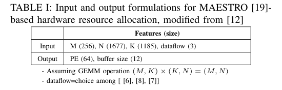
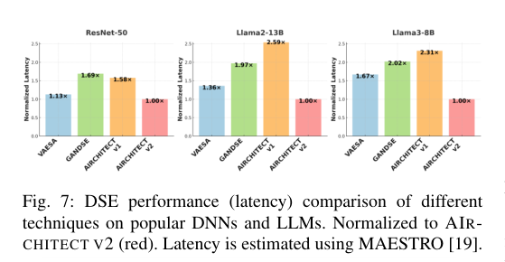

本报告由大模型自动生成，可能存在理解、归纳或数据转述错误；请以原论文为准。 AIRCHITECT v2: Learning the Hardware Accelerator Design Space Through Unified RepresentationsJamin Seo, Akshat Ramachandran, Yu-Chuan Chuang, Anirudh Itagi, Tushar Krishna · 2025 Design, Automation & Test in Europe Conference (DATE) · 2025 · 原文 · PDF 报告模型：gemini-3.1-pro-preview / high 本文介绍的是发表于 2025 年的一篇关于计算机体系结构与硬件加速器设计的论文《AIRCHITECT V2: Learning the Hardware Accelerator Design Space through Unified Representations》。 全文核心主线最初面临的问题：随着深度神经网络（DNN）和大型语言模型（LLM）的复杂性呈指数级增长，为其设计定制化硬件加速器的“设计空间探索”（Design Space Exploration, DSE）变得极其困难。不同的硬件资源配置（如计算单元数量、缓存大小）和映射策略会产生巨大的性能差异。传统的基于搜索的启发式算法耗时极长且容易陷入局部最优；而初期的基于机器学习的方法（如 AIrchitect v1）直接将探索简化为纯分类问题，导致模型泛化能力差、在复杂和数据分布极不均匀的设计空间中容易过拟合。 作者的解决方案：作者提出了 AIrchitect v2，这是一个基于 Transformer 编码器-解码器架构的机器学习框架。它引入了两个核心技术：一是利用**对比学习（Contrastive Learning）将非均匀且“长尾”分布的初始设计空间，映射到一个平滑且均匀的连续向量空间（特征嵌入空间）；二是提出了一种名为统一序数向量（Unified Ordinal Vectors, UOV）**的全新数据表示方法，巧妙地将粗粒度的“分类”和细粒度的“回归”结合在一起，以更小的模型体积实现了对庞大硬件配置空间的准确预测。 最终得到的结果：该方法在测试集上的预测准确率达到了 91.17%，比现有技术平均高出 15%；在未见过的真实大模型（如 Llama 2/3）的实际硬件部署评估中，由该模型预测出的硬件架构，其推理延迟性能比基线方法提高了约 1.7 倍。 局限与适用范围：本文的硬件性能评估严重依赖于 MAESTRO 分析模型。MAESTRO 是一个理论性能估算器，而非综合布线（EDA）级别的物理仿真器。这意味着本文所谓的“最优延迟”是架构层的理论周期数估算，并未实际反馈布局布线、物理时序、热效应或真实功耗等底层物理约束。 系统背景与跨层关系补充为了理解本文，需要先建立关于硬件加速器与深度学习编译映射的基础全貌。 背景补充：
I. Introduction (引言) 与 II. Background and Motivation (背景与动机)问题背景设计空间探索（DSE）的目的是在给定的工作负载下，找到延迟最低或能耗最小的硬件资源配置。过去，这依赖于人类专家的经验。后来出现了基于搜索的自动化方法（如强化学习、遗传算法、贝叶斯优化），这类方法本质上是在巨大的参数空间中不断试错，耗时巨大。 为了实现“恒定时间”（一次性前向传播即可出结果）的预测，先前的研究提出了基于监督学习的 AIrchitect v1。它将 DSE 抽象为一个纯分类问题：预先定义好有限种硬件配置（标签），模型通过多层感知机（MLP）输出不同标签的概率。 本文面临的三大挑战与动机作者分析了 AIrchitect v1 及其他机器学习方法失效的深层原因，这也是本文提出的动机：
作者的应对策略：引入对比学习来解决前两个问题（平滑空间、对抗数据不平衡）；引入**统一序数向量（UOV）**来解决第三个问题（兼顾分类的容易约束和回归的可扩展性）。对比学习最初用于计算机视觉中，其核心机制是让属于同一类的样本在数学向量空间（嵌入空间）中互相靠近，不同类的样本互相远离。本文将其引入硬件参数设计空间。 III. AIrchitect v2 (方法与模型架构)A. DSE 问题构建 (Problem Formulation)作者定义了本文要探索的 DSE 任务：在由 MAESTRO 建模的硬件加速器上进行资源分配。 结合原文表 1（Table I），该任务的输入特征包含 4 个维度：矩阵乘法（GEMM）的张量维度标量 （单位：原文未说明），以及数据流策略（Dataflow，是一个离散的分类变量，作者将其限定为权重驻留、输出驻留、行驻留三种作者设定的软件选择）。 任务的**输出（预测目标）**包含 2 个维度的硬件配置：最优的处理单元数量（PE，整数数值，单位：原文未说明）和 L2 缓存大小（整数数值，单位：原文未说明）。其中 L1 缓存大小被作者作为常量固定（这是基于先前工作 ConfuciuX 的作者设定，并非硬件规范强制）。 这个输入输出组合构成了规模达 的巨大设计空间。  B. 模型架构概览AIrchitect v2 采用了类似机器翻译中常用的 Transformer 编码器-解码器架构。
C. 第一阶段：编码器训练 (Stage 1 Training)此阶段的目的是让编码器学会构建一个良好的“特征嵌入空间”。为了克服非均匀景观和长尾分布，作者使用了一个组合损失函数，由对比学习损失和性能预测损失组成。 首先定义第一次出现的对比损失公式： 公式符号逐一解释：
逻辑推理：这个公式（基于 infoNCE）的作用是最大化锚点与其正样本在多维空间中的余弦相似度（分子），同时最小化它与所有负样本的相似度（分母中的第二项）。这强制编码器在数学空间中把对应相同硬件配置的输入特征“拉近”，把对应不同硬件配置的“推开”。 然而，纯粹的对比学习只关心“同类聚集”，并不关心它们在物理意义上代表的性能（如具体耗时多少周期）。因此，作者引入了一个性能预测器（Performance Predictor），采用绝对误差（L1-based）计算性能预测损失 （标量，单位：原文未说明，原文未给出展开公式，其物理含义是模型预测的理论延迟与真实理论延迟之间的误差标量）。 第一阶段的最终优化目标是两者的总和：（标量，单位：原文未说明）。 D. 第二阶段：解码器训练与 UOV 表示 (Stage 2 & UOV)在阶段 2 中，编码器的权重被固定（不进行梯度反向传播），专门训练解码器去读取那个已经变得平滑的嵌入向量，并输出最终的硬件配置。这里引出了本文最核心的创新：统一序数向量（Unified Ordinal Vectors, UOV）。 为什么要发明 UOV？
传统的分类预测输出一个由 0 和 1 组成的独热向量（One-hot vector，如 UOV 的数学定义： 作者采用空间递增离散化方法，将硬件参数空间切分为 个桶，由边界阈值集合 表示（包含 个元素，索引从 到 ，对象为桶的边界值，单位：原文未说明）。 接着定义 UOV 的生成公式： 公式符号沿用与逐一解释：
统一损失函数 (Unification Loss)： 为了训练模型输出这种特殊的 UOV，作者采用了类似“Focal Loss”的损失函数指导解码器训练： 公式符号沿用与逐一解释：
E. 模型部署流水线 (Deployment Pipeline)AIrchitect v2 是基于单层神经网络（如单独一个矩阵乘法层）进行训练和推理的。但在实际部署时，给定一个具有 层的模型，定义集合 ，其包含模型的所有层，元素总数为 个，索引从 到 ，对象为具体的网络层。假设 AIrchitect v2 已经为每一层推荐了硬件配置，定义集合 ，其元素总数为 个，索引从 到 ，对象为对应层 的推荐硬件配置 。由于通常整块芯片的硬件配置只能是统一的，作者提出了两种作者设定的启发式综合策略来决定最终的全局硬件配置 ：
IV. Results and Discussion (结果与讨论)A. 实验设置
B. 层级预测准确率 (Table III)如原文表 3 (Table III) 所示，AIrchitect v2 取得了 91.17% 的准确率。相比之下，AIrchitect v1 由于模型太浅、采用硬分类导致严重过拟合，准确率仅有 77.60%。GANDSE 虽然达到了 84.39%，但由于其生成方式面临“无约束学习问题”，仍然低于本文方法。这证明了对比学习平滑空间和 UOV 表示的有效性。 C. 模型级部署评估 (Figure 7) 作者在训练中未见过的现代模型（ResNet-50, Llama2-13B, Llama3-8B）上测试了“方法 1”流水线。如原文图 7 (Fig. 7) 所示，柱状图的纵轴是使用 MAESTRO 估算的归一化延迟，越低越好。红色的 AIrchitect v2 柱子始终最低，即它预测出的硬件配置跑大模型最快，性能相比其他基线有高达 1.7 倍的提升。VAESA（配合贝叶斯搜索）是唯一接近本文结果的方法，因为它也尝试通过 VAE 构建连续潜空间。 D. 核心消融实验 (Ablations)
V. Related Works (相关工作) 与 VI. Conclusion (结论)先前的搜索算法受限于庞大复杂的硬件空间效率低下，而现有的监督学习算法未能充分解决 DSE 数据集中长尾分布和非凸目标景观的难题。 本文所提出的 AIrchitect v2 通过 Transformer 的编码器-解码器架构，完美融合了用于特征空间正则化的对比学习，以及用于规避分类/回归劣势的统一序数向量（UOV）。通过这些设计，v2 显著提升了测试集上的预测准确度，并实质性地提升了所推断架构在新型 DNN/LLM 上的执行效率。 |